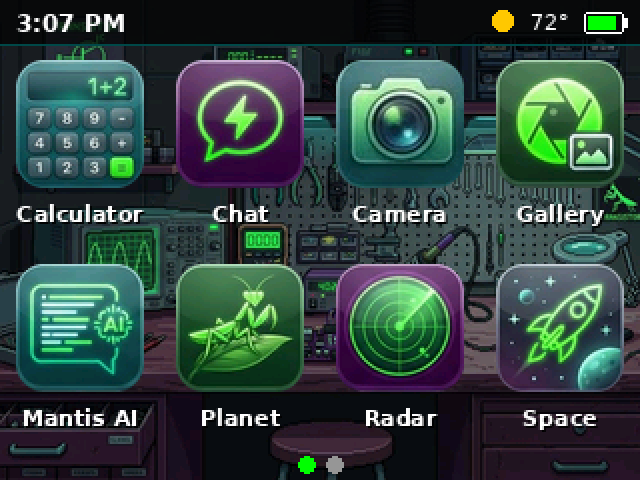
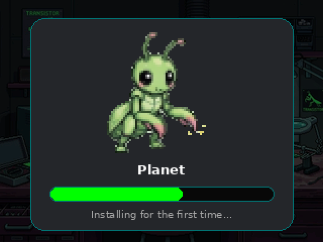
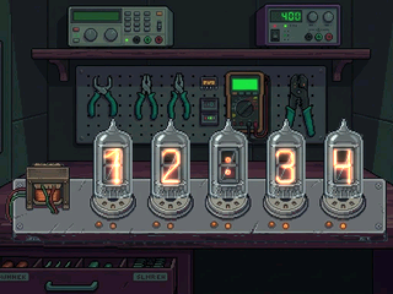
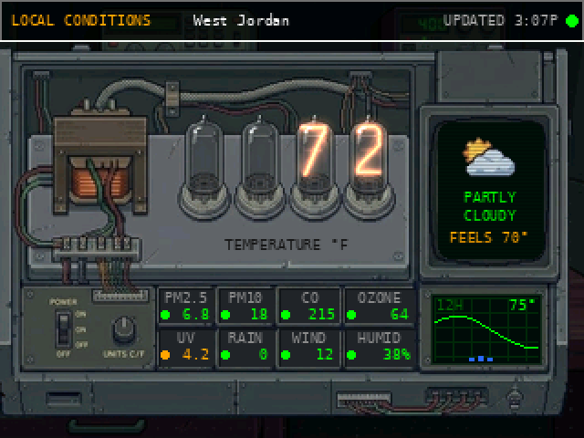
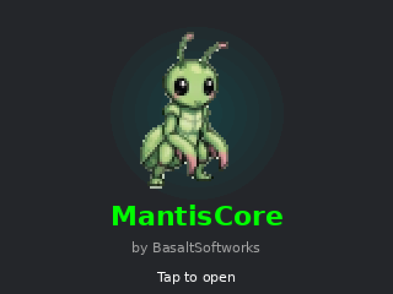

What it is
MantisCore is the home screen for your Mantis apps. Your apps sit on the SD card, and MantisCore shows them as icons over your own wallpaper, with the time, the weather and the battery at the top. Tap an app and the mantis shows its progress while the app starts. The first time you open an app, it installs it. After that, the app starts straight away.





How to use it
- Tap an app to open it. To get back to MantisCore, press the reset button.
- Swipe left or right to see more pages of apps.
- Hold an app to remove it from the device. Its saved progress stays on the SD card and comes back when you open it again.
- Tap the clock for the nixie clock. Tap anywhere to come back.
- Hold the clock to set the time, the time zone, or 12/24-hour time.
- Tap the weather for the weather station: temperature in nixie tubes, a CRT that cycles through now, today, wind, sunrise/sunset and air quality, readouts for air, UV, rain, wind and humidity with green/amber/red lights, and a 12-hour forecast graph. Tap anywhere to go back.
- Settings (the gear icon, last on the list): Wi-Fi, weather ZIP code, brightness, wallpapers and charging mode.
- Your progress in each app is saved to the SD card in
/backupsautomatically.
Install on Core2
Use Chrome or Edge, a USB data cable, and make sure the Core2 is switched on.
Download merged .bin Download SD card files
Installing replaces the old launcher, so apps that are installed now are removed. Each one reinstalls by
itself the next time you tap it. To keep progress saved by the old launcher, copy
/bkp/backupData.json into a new /backups folder and leave /bkp where it is.
SD card setup
- App files (
.bin) go in the root of the card. - Unzip the SD card files download onto the card. This adds
/iconsand/mantiscore. - Wallpapers:
.mgimages in/images. Custom wallpapers go in/images/backgrounds. - New icons: use
tools/mantis_icon_maker.pyfrom the repo. It saves/icons/<app name>.minext to the app.